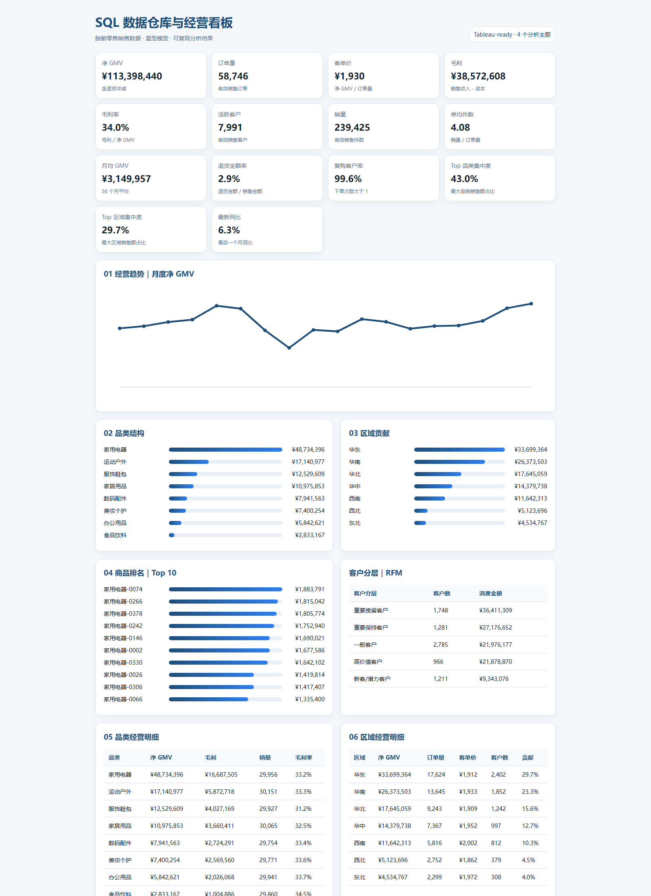
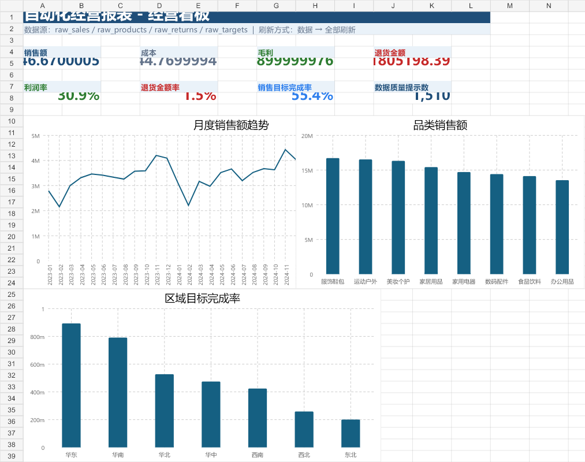
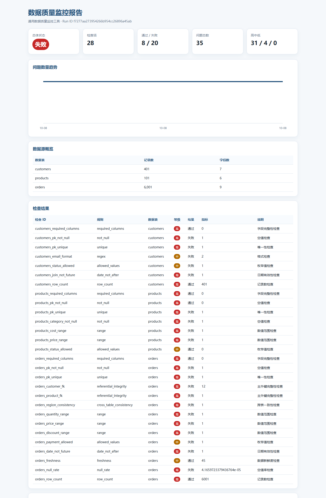

SQL 数据仓库 + Tableau
113,306 条事实数据、14 个 KPI、10 个 worksheet、4 个多图 dashboard。
SQL 数据仓库、Tableau 看板、Excel Power Query 与数据质量监控。

113,306 条事实数据、14 个 KPI、10 个 worksheet、4 个多图 dashboard。

4 类数据源、6 条 M 查询、数据透视表与异常清单。

28 项检查、35 个问题、SQLite 历史与 HTML 报告。